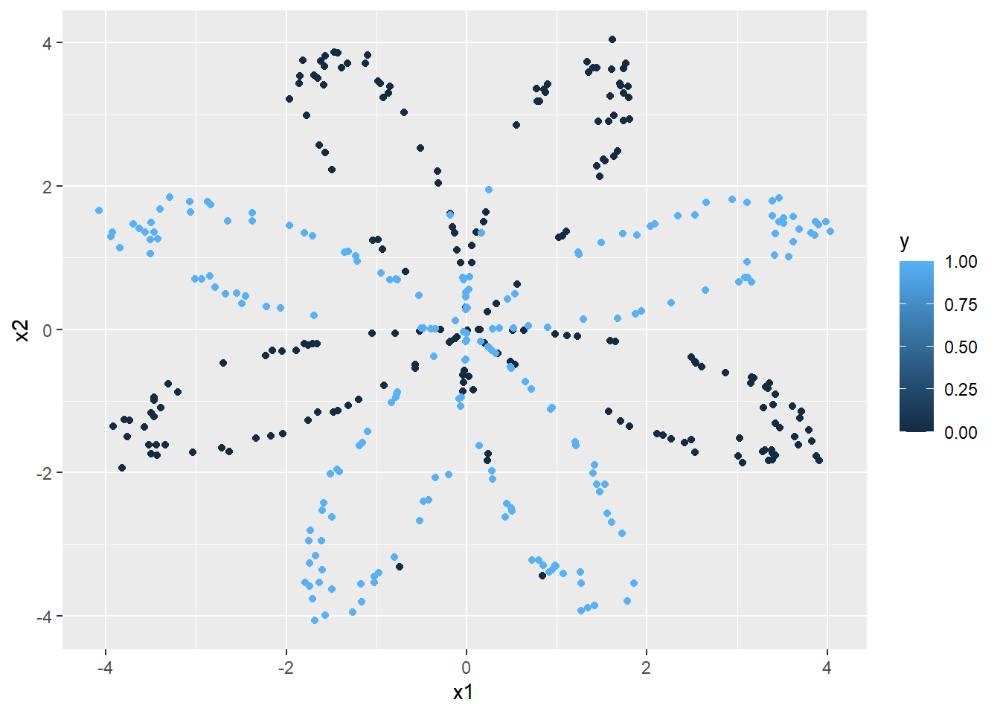

n_x = 2 # size of the input layer (2 columns)
n_h = 4 # size of the hidden layer
n_y = 1 # size of the output layer
planar_dataset <- function(){
set.seed(1)
m <- 400
N <- m/2
D <- 2
X <- matrix(0, nrow = m, ncol = D)
Y <- matrix(0, nrow = m, ncol = 1)
a <- 4
for(j in 0:1){
ix <- seq((N*j)+1, N*(j+1))
t <- seq(j*3.12,(j+1)*3.12,length.out = N) + rnorm(N, sd = 0.2)
r <- a*sin(4*t) + rnorm(N, sd = 0.2)
X[ix,1] <- r*sin(t)
X[ix,2] <- r*cos(t)
Y[ix,] <- j
}
d <- as.data.frame(cbind(X, Y))
names(d) <- c('x1','x2','y')
d
}
df = planar_dataset()
ggplot2::ggplot(df, ggplot2::aes(x = x1, y = x2, color = y)) + ggplot2::geom_point()